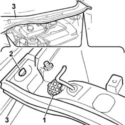

Procedures › 72 PANELS AND FRAME › 7210 REMOVING REFITTING › 7210E EXTERNAL PARTS › 7210E22 WINDSCREEN BASE TRIM 7210E22 WINDSCREEN BASE TRIM
Path Procedures > 72 PANELS AND FRAME > 7210 REMOVING REFITTING > 7210E EXTERNAL PARTS > 7210E22 WINDSCREEN BASE TRIM
Kind repair procedure (removal / refitting; the operation number is the code)
Applies to engines: 3.0 24V V6; all production periods
Interactive page https://sloeber94.github.io/elrnDB-fUlss/en/#/179007968
Applies to: engines: 3.0 24V V6; all production periods
1. Adjust the anchorage clips and disconnect the drainage pipe.
2. Turn the retaining clips.
3. Release and remove the windscreen base trim assembly.

Topics linked from this page (1)
Topics that link to this page (35) 1004B14 POWER UNIT WITH AUTOMATIC TRANSMISSION R + R repair procedure (removal / refitting; the operation number is the code) · engines: 3.0 24V V6; all production periods 1016A34 RIGHT-HAND CAM COVER - R + R AND REPLACE GASKET repair procedure (removal / refitting; the operation number is the code) · engines: 3.0 24V V6; all production periods 1020D14 FRONT CRANKSHAFT OIL SEAL COVER - R.R AND REPLACE SEALS FOR VERSIONS WITH OIL PUMP ON CRANKSHAFT, TIMING SIDE repair procedure (removal / refitting; the operation number is the code) · engines: 2.0 16v, 3.0 24V V6; all production periods 1020D18 FRONT CRANK SHAFT COVER OIL SEAL - REPLACE repair procedure (removal / refitting; the operation number is the code) · all engines; all production periods 1032B46 TOOTHED DRIVE PULLEY - R + R repair procedure (removal / refitting; the operation number is the code) · all engines; all production periods 1032C18 MOBILE TIMING SYSTEM TENSIONER - R + R FOR 24 VALVE ENGINES repair procedure (removal / refitting; the operation number is the code) · engines: 3.0 24V V6, 2.0 16V JTD, 2.2 16V JTD; all production periods 1032C31 FIXED TIMING TENSIONER - R R repair procedure (removal / refitting; the operation number is the code) · engines: 2.0 16v, 3.0 24V V6; all production periods 1032D12 TIMING SYSTEM PROTECTIVE COVER(S) - R + R repair procedure (removal / refitting; the operation number is the code) · all engines; all production periods 1036C39 TIMING VARIATOR ON CYLINDER HEAD INTAKE CAMSHAFT - R R repair procedure (removal / refitting; the operation number is the code) · engines: 3.0 24V V6; all production periods 1040B32 FUEL FILLER PIPE UNION SLEEVE - R + R repair procedure (removal / refitting; the operation number is the code) · all engines; all production periods 1056B62 L/H AND R/H FUEL PIPE ASSEMBLY - WITH INJECTORS - R + R repair procedure (removal / refitting; the operation number is the code) · engines: 3.0 24V V6; all production periods 1056B67 R/H FUEL MANIFOLD PIPE, WITH INJECTORS - R + R repair procedure (removal / refitting; the operation number is the code) · engines: 3.0 24V V6; all production periods 1056B70 INJECTOR (ONE) - R + R WITH FUEL MANIFOLD PIPE REMOVED - INCLUDES SEAL REPLACEMNT repair procedure (removal / refitting; the operation number is the code) · engines: 2.0 16v, 3.0 24V V6; all production periods 1056B90 SYSTEM CABLE BUNDLE - R + R repair procedure (removal / refitting; the operation number is the code) · engines: 3.0 24V V6; all production periods 1072B10 INLET MANIFOLD - R + R AND REPLACE SEAL repair procedure (removal / refitting; the operation number is the code) · all engines; all production periods 1072B50 SLEEVES CONNECTING AIR CAPACITY BOX TO INLET MANIFOLD IS - R+R repair procedure (removal / refitting; the operation number is the code) · engines: 3.0 24V V6; all production periods 1080B39 RIGHT CATALYTIC PRECONVERTER R R OR REPLACE CYLINDER HEAD GASKET repair procedure (removal / refitting; the operation number is the code) · all engines; all production periods 1080B93 RIGHT UPPER LAMBDA SENSOR R R repair procedure (removal / refitting; the operation number is the code) · engines: 3.0 24V V6; all production periods 1080E26 FUEL VAPOUR CUT OUT VALVE FROM FILTER - R.R. repair procedure (removal / refitting; the operation number is the code) · engines: 2.0 16v, 3.0 24V V6; all production periods 1088D34 RIGID PIPE/CONNECTOR (ONE) FOR ENGINE COOLING CIRCUIT - R.R. repair procedure (removal / refitting; the operation number is the code) · engines: 2.0 16v, 3.0 24V V6; all production periods 1088D10 LOWER SLEEVE FOR COOLANT OUTLET FROM RADIATOR - R + R repair procedure (removal / refitting; the operation number is the code) · all engines; all production periods 1088D14 UPPER SLEEVE FOR COOLANT INLET TO RADIATOR - R + R repair procedure (removal / refitting; the operation number is the code) · all engines; all production periods 1088D32 <x>COOLANT MANIFOLD IN CYLINDER HEAD - R&R</x> repair procedure (removal / refitting; the operation number is the code) · engines: 3.0 24V V6; all production periods 1088D53 RIGID SUPPLY OR RETURN PIPES FOR ENGINE OIL HEAT EXCHANGER - R.R. repair procedure (removal / refitting; the operation number is the code) · engines: 3.0 24V V6; all production periods 1088B10 ENGINE COOLING TANK - R + R repair procedure (removal / refitting; the operation number is the code) · all engines; all production periods 1088B30 COOLANT LEVEL SENSOR - R.R. repair procedure (removal / refitting; the operation number is the code) · engines: 3.0 24V V6, 2.0 16V JTD, 2.2 16V JTD; all production periods 1088C10 WATER PUMP - R + R repair procedure (removal / refitting; the operation number is the code) · all engines; all production periods 1088C30 THERMOSTAT UNIT - R+R repair procedure (removal / refitting; the operation number is the code) · all engines; all production periods 2130A38 AUTOMATIC TRANSMISSION FLUID HEAT EXCHANGER - R + R - INCLUDING LEVEL TOP UP IF NECESSARY repair procedure (removal / refitting; the operation number is the code) · engines: 2.0 16v, 3.0 24V V6, 2.0 16V JTD; all production periods 2130A10 AUTOMATIC TRANSMISSION - R + R repair procedure (removal / refitting; the operation number is the code) · engines: 3.0 24V V6; all production periods 2130A40 COOLANT SUPPLY PIPE TO AUTOMATIC TRANSMISSION FLUID HEAT EXCHANGER - R.R. repair procedure (removal / refitting; the operation number is the code) · engines: 3.0 24V V6; all production periods 2130B12 AUTOMATIC TRANSMISSION TORQUE CONVERTER - R+R repair procedure (removal / refitting; the operation number is the code) · engines: 3.0 24V V6; all production periods 5510C18 RIGHT HAND CYLINDER HEAD IGNITION COIL - R+R repair procedure (removal / refitting; the operation number is the code) · all engines; all production periods 5510C44 KNOCK SENSOR (ONE) - R+R repair procedure (removal / refitting; the operation number is the code) · engines: 3.0 24V V6; all production periods 5510D10 SPARK PLUGS - R+R repair procedure (removal / refitting; the operation number is the code) · all engines; all production periods
 Removing
Removing Refitting
Refitting